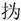
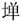

春秋公羊传卷十六
宣公下
宣公十年
春，公如齐。公至自齐。齐人归我济西田。齐已取之矣，其言我何？言我者未绝于我也。曷为未绝于我？齐已言取之矣，其实未之齐也。
夏四月丙辰，日有食之。己巳，齐侯元卒。
齐崔氏出奔卫。崔氏者何？齐大夫也。其称崔氏何？贬。曷为贬？讥世卿，世卿非礼也。
公如齐。五月，公至自齐。
癸巳，陈夏征舒弑其君平国。
六月，宋师伐滕。
公孙归父如齐，葬齐惠公。
晋人、宋人、卫人、曹人伐郑。
秋，天王使王季子来聘。王季子者何？天子之大夫也。其称王季子何？贵也。其贵奈何？母弟也。
公孙归父帅师伐邾娄，取绎。
大水。
季孙行父如齐。
冬，公孙归父如齐。
齐侯使国佐来聘。
饥。何以书？以重书也。
楚子伐郑。
宣公十一年
春，王正月。
夏，楚子、陈侯、郑伯盟于辰陵。
公孙归父会齐人伐莒。
秋，晋侯会狄于欑函。
冬十月，楚人杀陈夏征舒。此楚子也，其称人何？贬。曷为贬？不与外讨也。不与外讨者，因其讨乎外而不与也，虽内讨亦不与也。曷为不与？实与而文不与。文曷为不与？诸侯之义不得专讨也。诸侯之义不得专讨，则其曰实与之何？上无天子，下无方伯，天下诸侯有为无道者，臣弑君，子弑父，力能讨之，则讨之可也。
丁亥，楚子入陈，纳公孙宁、仪行父于陈。此皆大夫也，其言纳何？纳公党与也。
宣公十二年
春，葬陈灵公。讨此贼者非臣子也，何以书葬？君子辞也。楚已讨之矣，臣子虽欲讨之而无所讨也。
楚子围郑。
夏六月乙卯，晋荀林父帅师及楚子战于邲，晋师败绩。大夫不敌君，此其称名氏以敌楚子何？不与晋而与楚子为礼也。曷为不与晋而与楚子为礼也？庄王伐郑，胜乎皇门，放乎路衢。郑伯肉袒，左执茅旌，右执鸾刀，以逆庄王曰：“寡人无良，边垂之臣，以干天祸，是以使君王沛焉，辱到敝邑。君如矜此丧人，锡之不毛之地，使帅一二耋老而绥焉，请唯君王之命。”庄王曰：“君之不令臣交易为言，是以使寡人得见君之玉面，而微至乎此。”庄王亲自手旌，左右军，退舍七里。将军子重谏曰：“南郢之与郑相去数千里，诸大夫死者数人，厮役扈养，死者数百人，今君胜郑而不有，无乃失民臣之力乎？”庄王曰：“古者杅不穿，皮不蠹，则不出于四方。是以君子笃于礼而薄于利，要其人而不要其土，告从，不赦不详，吾以不详道民，灾及吾身，何日之有？”既则晋师之救郑者至，曰：“请战。”庄王许诺。将军子重谏曰：“晋，大国也，王师淹病矣，君请勿许也。”庄王曰：“弱者吾威之，强者吾辟之，是以使寡人无以立乎天下？”令之还师而逆晋寇。庄王鼓之，晋师大败，晋众之走者，舟中之指可掬矣。庄王曰：“嘻！吾两君不相好，百姓何罪？”令之还师而佚晋寇。
秋七月。
冬十有二月戊寅，楚子灭萧。
晋人、宋人、卫人、曹人同盟于清丘。
宋师伐陈。
卫人救陈。
宣公十八年
春，晋侯、卫世子臧伐齐。
公伐杞。
夏四月。
秋七月，邾娄人戕鄫子于鄫。戕鄫子于郐者何？残贼而杀之也。
甲戌，楚子旅卒。何以不书葬？吴、楚之君不书葬，辟其号也。
公孙归父如晋。
冬十月壬戌，公薨于路寝。
归父还自晋，至柽，遂奔齐。还者何？善辞也。何善尔？归父使于晋，还自晋，至柽闻君薨家遣，帷哭君成踊，反命乎介，自是走之齐。